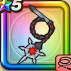

ボルケーノウィップ
攻略班 8.0点 / ねむり打ちマヌーサマホトーン双竜打ち火炎旋風※錬成で強化可能
くわしい特徴
【レベル別習得スキル】 Lv1こうげき魔力+5【魔法戦士】 Lv1ねむり打ち（消費MP：12）催眠をかけ敵全体に威力120%の体技ダメージを与えたまに眠りをさそう Lv10マヌーサ（消費MP：16）敵全体を幻でつつみこむ Lv15マホトーン（消費MP：21）敵全体の呪文を封じる Lv20双竜打ち（消費MP：18）敵1体に威力150%の体技攻撃を2回し、たまに守備力を1段階下げる Lv30火炎旋風（消費MP：24）敵全体にこうげき力とこうげき魔力を込めた150%のメラ属性体技ダメージを与える Lv35怪人系へのダメージ+10% Lv45こうげき魔力+6 Lv50攻撃力+12錬成スキル改1悪魔系へのダメージ+10%改2火炎旋風改（消費MP：31）敵全体にこうげき力とこうげき魔力を込めた175%のメラ属性体技ダメージを与え、まれに呪文を封じる改3怪人系へのダメージ+10%改4錬成ぶき特別演出解放・メガモン討伐結果発表時に特別演出が追加・武器の見た目に特別なエフェクトが追加 【限界突破スキル】 1凸スキルの斬撃・体技ダメージ+5% 2凸スキルの斬撃・体技ダメージ+5% 3凸スキルの斬撃・体技ダメージ+5% 4凸スキルの斬撃・体技ダメージ+5%